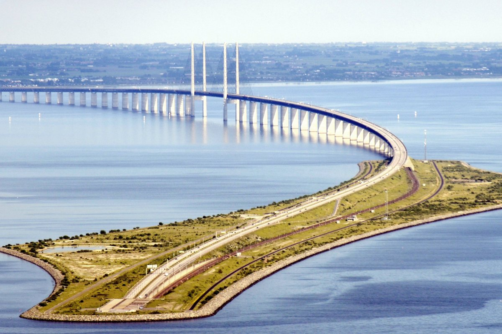

DANYANG-KUNSHAN
GRAND BRIDGE
The Kunshan Grand Bridge is the longest bridge in the world. The bridge is located on the rail line between Shanghai and Nanjing in Jiangsu province. It is in the Yangtze River Delta where the geography is characterised by lowland rice paddies, canals, rivers, and lakes.The bridge runs roughly parallel to the Yangtze River, about 8 to 80 km (5 to 50 mi) south of the river. It passes through the northern edges of population centers (from west to east) beginning in Danyang, Changzhou, Wuxi, Suzhou, and ending in Kunshan. There is a 9-kilometre long (5.6 mi) section over open water across Yangcheng Lake in Suzhou.[1]
CHANGHUA–KAOHSIUNG
VIADUCT
The Changhua–Kaohsiung viaduct (Chinese: 彰化－高雄高架橋) is one of the world's longest bridges. [1][2][3] The bridge acts as a viaduct for part of the railway line of the Taiwan High Speed Rail network. Over 200 million passengers had been carried over it by December 2012.[3] The bridge goes from Baguashan (八卦山) in Changhua County to Zuoying in Kaohsiung. Completed in 2007,[3] the bridge is 157.317 kilometers (97.752 mi) in length.[2] The railway is built across a vast series of viaducts, as they were designed to be earthquake resistant to allow for trains to stop safely during a seismic event and for repairable damage following a maximum design earthquake. [4] Bridges built over known fault lines were designed to survive fault movements without catastrophic damage.[5]
CANGDE GRAND BRIDGE
Cangde Grand Bridge is the world's fourth longest bridge.[1][2] Finished in 2010, the bridge is a part of the Beijing–Shanghai High-Speed Railway and is the third longest bridge on the railway. The bridge has been designed with a view to withstanding earthquakes. [3] The total length of the Cangde super-large bridge is 105.81 km (65.75 mi) and it has a total of 3092 piers.[2]
TIAJIN GRAND BRIDGE
Tianjin Grand Bridge (Langfang–Qingxian viaduct) is a railway viaduct bridge that runs between Langfang and Qingxian, part of the Beijing–Shanghai High-Speed Railway.[1] It is one of the longest bridges in the world with a total length of about 113.7 kilometers (70.6 mi). It was completed in 2010 and opened in 2011. At the time Guinness World Records recorded it as the second longest bridge in the world.[2 The design of the elevated track was chosen on the one hand to avoid numerous individual structures for crossing roads and railways, and on the other to shorten the construction period. In addition, the railway line requires less land area in this design: a railway embankment requires 28.4 hectares per routed kilometer, the bridge but only 10.9 ha, less than half the area.[3] The bridge consists of 32 m long box girders weighing 860 tons each. These girders were created in two workplaces along the bridge, brought to the installation site on the bridge section already installed, and then placed on the piers by a special crane.[3]
THROGH ARC BRIDGES
A through arch bridge, also known as a half-through arch bridge or a through-type arch bridge, is a bridge that is made from materials such as steel or reinforced concrete, in which the base of an arch structure is below the deck but the top rises above it. It can either be lower bearing or mid-bearing. Thus, the deck is within the arch, and cables or beams that are in tension suspend the central part of the deck from the arch.
ØRESUND BRIDGE
The Öresund or Øresund Bridge (Danish: Øresundsbroen [ˈøːɐsɔnsˌpʁoˀn̩]; Swedish: Öresundsbron [œrɛˈsɵ̂nːdsˌbruːn]; hybrid name: Øresundsbron) is a combined railway and motorway bridge across the Øresund strait between Sweden and Denmark. It is the longest combined road and rail bridge in Europe, running nearly 8 kilometres (5 miles) from the Swedish coast to the artificial island Peberholm in the middle of the strait.The crossing is completed by the 4-kilometre (2.5 mi) Drogden Tunnel from Peberholm to the Danish island of Amager. The bridge connects the road and rail networks of the Scandinavian Peninsula with those of Central and Western Europe. A data cable also makes the bridge the backbone of Internet data transmission between central Europe and Sweden.[2] The international European route E20 crosses via road, the Øresund Line via railway. The construction of the Great Belt Fixed Link (1988–1998), connecting Zealand to Funen and thence to the Jutland Peninsula, and the Øresund Bridge have connected Central and Western Europe to Sweden by road and rail.
NANSHA BRIDGE
The Nansha Bridge (simplified Chinese: 南沙大桥; traditional Chinese: 南沙大橋; pinyin: Nánshā Dàqiáo) are two suspension bridges located in Guangdong, China, spanning the Pearl River. It is also the beginning of the Guangzhou–Longchuan Expressway. The bridge is an important part of the Pearl River Delta expressway network, connecting the Shatian Town in Dongguan to Nansha District in Guangzhou, as well as the Guangzhou Ring Expressway and the Guangshen Yanjiang Expressway. While it was under construction it was due to be named the Humen Second Bridge (Chinese : 虎门二桥)[1] The Nansha Bridge opened to traffic on April 2, 2019.[2]
DHOLA SADIYA BRIDGE
The Bhupen Hazarika Setu, also referred to as the Dhola–Sadiya Bridge, is a beam bridge in India, connecting the northeast states of Assam and Arunachal Pradesh.[1] The bridge spans the Lohit River, a major tributary of the Brahmaputra River, from the village of Dhola (Tinsukia District) in the south to Sadiya to the north. [2] The bridge is the first permanent road connection between the northern Assam and eastern Arunachal Pradesh.[3] At 9.15 kilometres (5.69 mi) in length, it is the longest bridge in India over water.[4][5] However, the 9.76 kilometres ( 6.06 mi) Kacchi Dargah–Bidupur Bridge under construction in the Indian state of Bihar, is expected to become the longest bridge in India upon its estimated completion in November 2021.
DUGE BRIDGE

The Duge Bridge ([tú.kɤ̌]), also called the Beipanjiang Bridge, is a 4-lane cable-stayed bridge on the border between the provinces of Guizhou and Yunnan.[1][2] As of 2016, the bridge is the highest in the world, with the road deck sitting over 565 metres (1,850 feet) above the Beipan River.[3][4] The bridge is part of the G56 Hangzhou–Ruili Expressway between Qujing and Liupanshui. The eastern tower measures 269 m (883 ft) making it one of the tallest in the world. The bridge spans 1,340 m (4,400 ft) between Xuanwei city, Yunnan and Shuicheng County, Guizhou and shortens the journey between the two places from around five hours' drive to about an hour.[5]
PENANG BRIDGE
The Penang Bridge E36 is a 13.5-kilometre (8.4-mile)[2][3] dual carriageway toll bridge and controlled-access highway in the state of Penang, Malaysia. The bridge connects Perai on the mainland side of the state with Gelugor on the island, crossing the Penang Strait. The bridge was the first and, until 2014, the only road connection between the peninsula and the island. The bridge is the second-longest bridge in Malaysia and the fifth-longest in Southeast Asia by total length, with a length over water of 8.4 kilometres (5.2 miles).[3] The bridge was inaugurated on 14 September 1985.[1] The current concession holder and maintainer of the bridge is PLUS Expressways. Penang Bridge Sdn Bhd was the concession holder before it was merged with the current concessionaire.[when?]
INCHEON BRIDGE
The Incheon Bridge (Korean: 인천대교; RR: Incheon-daegyo) is a reinforced concrete cable-stayed bridge in South Korea. At its opening in October 2009, it became the second bridge connection between Yeongjong Island and the mainland of Incheon. The Incheon Bridge is South Korea's longest spanning cable-stayed bridge.[4] In comparison, it is the world's tenth longest cable-stayed bridge as of January 2019.[5] The bridge provides direct access between Songdo and Incheon International Airport, reducing travel time between them by up to one hour. The section of the bridge crossing the sea, whose concessionaire is Incheon Bridge Corporation, is funded by the private sector. Korea Expressway Corporation and the Korean Ministry of Land, Transport and Maritime Affairs (MLTM) managed the project. The bridge is located to the south of the Yeongjong Bridge, which was the first bridge connection between Yeongjong Island and the mainland.